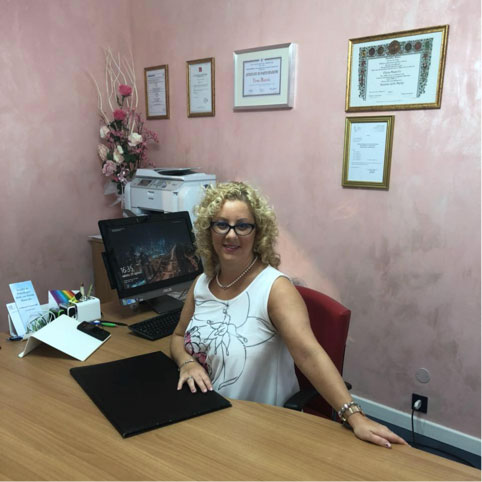
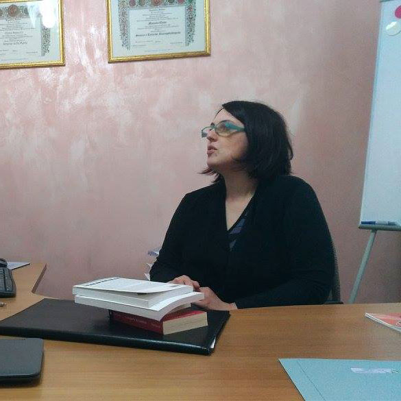
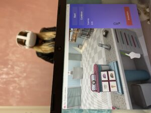
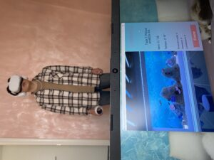
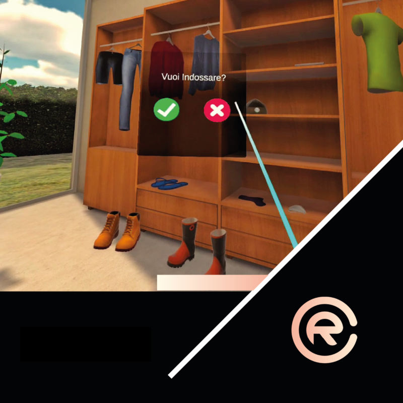
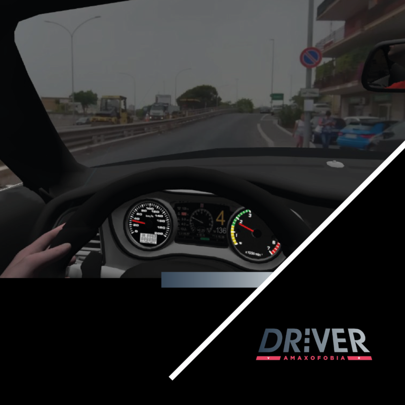

Studio multidisciplinare a Cossato, dal 2015
Comprendere il bisogno. Costruire il percorso.
Psicologia e pedagogia integrate per accompagnare bambini, adolescenti, adulti, famiglie e scuole.
Dal 2015 sul territorio
7 aree di intervento
Approccio multidisciplinare
Servizi
Da dove possiamo iniziare.
Ogni bisogno richiede uno sguardo preciso. Scegli l'area più vicina alla tua situazione per conoscere valutazioni, percorsi e modalità di supporto.
Quando serve, il lavoro coinvolge famiglia, insegnanti e rete territoriale per costruire strumenti utili nella vita quotidiana e scolastica.
Infanzia, adolescenza e scuola
Adulti e relazioni
Area giuridica
Scuola e formazione
Professionisti e aree
Competenze diverse, uno sguardo condiviso.
Conosci le professioniste e individua l'area di intervento più vicina alle tue esigenze.

Psicologia · età evolutiva · adulti
Dott.ssa Elena Mascolo
Psicologa iscritta all'Ordine degli Psicologi del Piemonte, tutor dell'apprendimento specializzato in BES, Trainer Feuerstein e Psicologo Digitale abilitato all'utilizzo della realtà virtuale come strumento clinico.

Pedagogia · scuola · genitorialità
Dott.ssa Alessia Frontori
Pedagogista disciplinata ai sensi della legge 205/2017, formatrice e supervisore pedagogico per istituti scolastici, servizi per la prima infanzia e consulenza al personale educativo.
Psicoterapia · adolescenti · adulti
Dott.ssa Claudia Giordana
Psicologa perfezionata in sessuologia clinica e psicoterapeuta a orientamento psicoanalitico. Si occupa di ansia, attacchi di panico, lutto, depressione, stress e difficoltà relazionali.
Tutor apprendimento · Metodo Feuerstein
Dott.ssa Mara Pace
Tutor dell'apprendimento, Mediatrice Feuerstein e psicologa in formazione. Riceve in studio in più giornate della settimana su appuntamento.
Psicologia · profilo dimostrativo
Professionista demo 01
Profilo temporaneo inserito per verificare la gestione di un’équipe più ampia nell’area psicologica.
Informazioni sull’area
Psicologia · profilo dimostrativo
Professionista demo 02
Profilo temporaneo inserito per simulare l’ampliamento dei percorsi psicologici proposti dallo studio.
Informazioni sull’area
Psicologia · profilo dimostrativo
Professionista demo 03
Profilo temporaneo utile a controllare l’aspetto della sezione in presenza di numerosi professionisti.
Informazioni sull’area
Pedagogia · profilo dimostrativo
Professionista demo 04
Profilo temporaneo inserito per verificare la gestione di un’équipe più ampia nell’area pedagogica.
Informazioni sull’area
Pedagogia · profilo dimostrativo
Professionista demo 05
Profilo temporaneo inserito per simulare nuovi percorsi dedicati a scuola, educazione e genitorialità.
Informazioni sull’area
Pedagogia · profilo dimostrativo
Professionista demo 06
Profilo temporaneo utile a controllare l’aspetto della sezione con più figure dell’area pedagogica.
Informazioni sull’area
Apprendimento · profilo dimostrativo
Professionista demo 07
Profilo temporaneo inserito per verificare la gestione di un’équipe più ampia nell’area apprendimento.
Informazioni sull’area
Apprendimento · profilo dimostrativo
Professionista demo 08
Profilo temporaneo inserito per simulare ulteriori competenze nei percorsi di studio e potenziamento.
Informazioni sull’area
Apprendimento · profilo dimostrativo
Professionista demo 09
Profilo temporaneo utile a controllare la sezione con numerose figure dedicate all’apprendimento.
Informazioni sull’areaPsicologia digitale
Valutazione neuropsicologica avanzata con Nesplora e realtà virtuale.
Lo studio è stato il quarto centro in Italia ad aver avviato la valutazione neuropsicologica avanzata con Nesplora Giunti e realtà virtuale, a partire da luglio 2022. La realtà virtuale viene utilizzata per diagnosi accurate, interventi mirati, sostegno psicologico e potenziamento cognitivo.
Richiedi informazioni sulla realtà virtuale



Aree trattate
- Attenzione, memoria e funzioni esecutive
- Paura di volare, guidare, altezza, spazi chiusi e spazi aperti
- Public speaking, ansia scolastica e colloquio di lavoro
- Rilassamento, stress, ansia e preparazione al parto con Hipnobirthing
- Supporto per disturbo ossessivo compulsivo, claustrofobia e fobie specifiche
Metodo
Un percorso costruito con attenzione.
Ogni percorso parte da una valutazione approfondita della domanda e prosegue con interventi specifici, monitoraggio e collaborazione tra professioniste, famiglia, scuola e rete di riferimento.
Analisi della domanda
Primo colloquio e inquadramento del bisogno per scegliere la strada più utile.
Valutazione specialistica
Test, osservazioni e strumenti clinici mirati in base all'area di intervento.
Percorso personalizzato
Sostegno, riabilitazione, potenziamento, consulenza o supervisione.
Rete e monitoraggio
Quando necessario, confronto con famiglia, scuola, servizi e professionisti coinvolti.
Eventi
Incontri e servizi da conoscere.
Area giuridica
Consulenza Tecnica di Parte
Grazie alla collaborazione con gli avvocati Manuela Piras e Giovanna Barbotto è possibile affrontare separazioni e situazioni familiari complesse con un approccio multidisciplinare.
Richiedi informazioni
Valutazione avanzata
Nesplora e realtà virtuale
Diagnosi accurate per interventi mirati su attenzione, memoria e funzioni esecutive, rivolte a bambini dai 6 anni, adolescenti, adulti e anziani.
Richiedi informazioni
Su appuntamento
Coordinazione Genitoriale
La Dott.ssa Mascolo e la Dott.ssa Frontori, insieme agli avvocati Manuela Piras e Giovanna Barbotto, accompagnano i genitori separati nella gestione del conflitto, mettendo al centro i bisogni e il benessere dei figli.
Solo su appuntamento
Consulenza congiunta psicologica, pedagogica e giuridica
Richiedi informazioni
Promozioni
Pacchetti e agevolazioni.
Le formule pubblicate fanno riferimento al tariffario 2025. Contatta lo studio per verificarne disponibilità, condizioni e aggiornamenti.
Metodo Feuerstein e apprendimenti
Pacchetto Riabilitazione
Percorsi per DSA, ADHD, disabilità intellettiva, funzionamento cognitivo limite, disturbi del linguaggio e riabilitazione neurocognitiva.
Richiedi informazioniPacchetti di sostegno psicologico
Sedute di sostegno con tecniche di rilassamento, abilità sociali, realtà virtuale per le fobie e monitoraggio dell'ansia con Biofeedback.
Richiedi informazioniValutazione psicodiagnostica
Un pacchetto dedicato alla valutazione specialistica in età evolutiva, costruito in base alla domanda e alle necessità del bambino o del ragazzo.
Richiedi informazioniValutazione neuropsicologica con Nesplora
Valutazione avanzata di attenzione, memoria e funzioni esecutive con gli ambienti virtuali Aula, Aquarium, Ice Cream e Memory Suite.
Richiedi informazioniContatti
Siamo qui per ascoltare la tua richiesta.
Scegli la professionista di riferimento, scrivi allo studio oppure apri subito le indicazioni stradali.
Dove siamoVia Mercato, 77
13836 Cossato (BI)Apri la navigazione
13836 Cossato (BI)Apri la navigazione
Orari dello studioLunedì–venerdì
9:00–19:00Sabato su appuntamento
9:00–19:00Sabato su appuntamento
EM
Area psicologica
Dott.ssa Elena Mascolo
AF
Area pedagogica